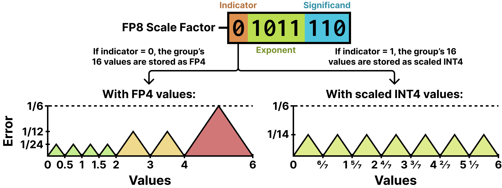
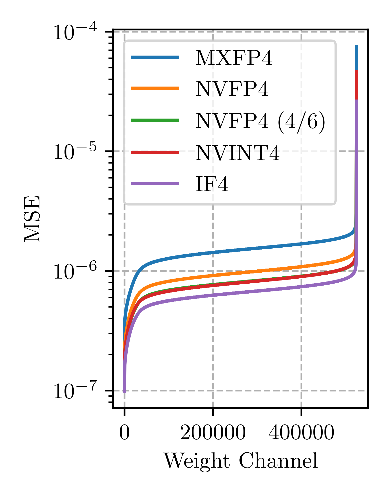
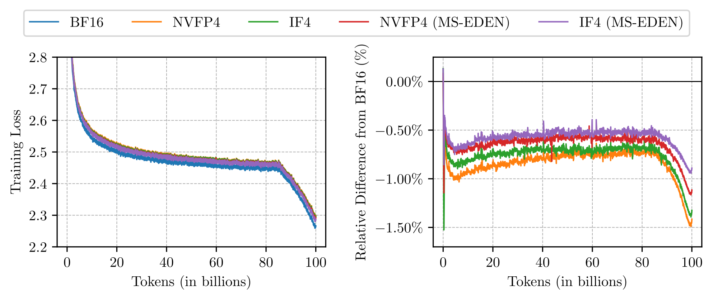
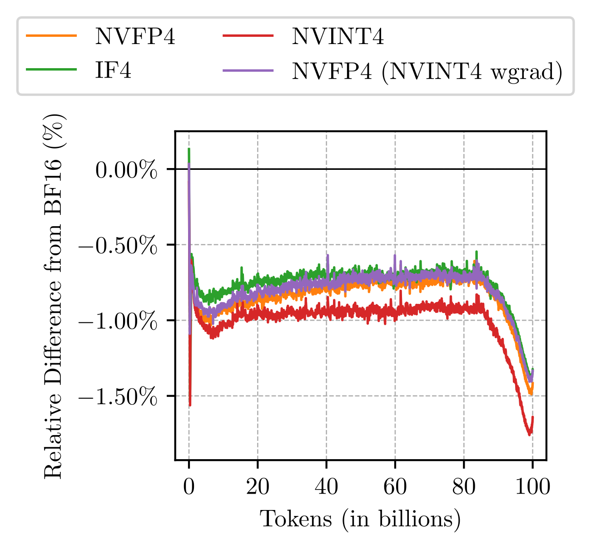
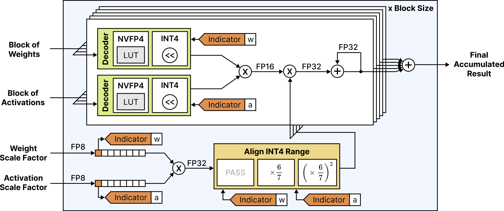

FP4只有16个可表示值，NVFP4把每16个数绑成一组，误差却堆在接近最大值的地方。MIT这篇论文让每组自己选：存FP4还是INT4，标记位藏在scale因子的闲置符号位里。精度涨了，存储一分不加。下文拆解。
数值精度降，矩阵乘法在现代加速器上就快：FP4比FP8快一倍，比FP16、BF16快三倍，B200与MI355X上已有硬件支持。但要吃到硬件红利，低精度矩阵乘的两个操作数都得量化，训练时意味着权重、激活、梯度全量化。4-bit格式只能表示16个值，训练格外难。
FP4的全部家当是 ±{0, 0.5, 1, 1.5, 2, 3, 4, 6}。
块缩放是绕过精度不足的标准招：NVFP4每16个FP4值配一个单独量化的FP8 scale因子，MXFP4每32个值配一个。组内被限制在FP4的表示范围，整张量的动态范围却大得多。
成功的FP4训练配方还离不开几样标配：随机Hadamard变换平滑离群值，随机舍入给梯度无偏估计，很多敏感层和操作留在高精度。每样都加开销，吃掉低精度矩阵乘省下的时间。所以每项操作必须极致高效：全部开销加起来得小于FP4相对FP8省下的时间，大约就是一次FP4矩阵乘本身。
新近提出的Four Over Six给NVFP4加自适应：每组按最大4或最大6缩放，而不是全按默认最大6。缩到4的组，组内量化误差分布更均匀，利好分布均匀的数据。但有两个代价：用最大4就得放弃6和 -6，16个值本就没几个；而且组scale要乘1.5实现缩4，张量级FP32 scale得跟着降，整张量动态范围砍42.9%。
自适应缩放显然有益，但换底层格式或许能绕开这些代价。这就是IF4的出发点。
IF4沿用NVFP4的块缩放骨架：张量级FP32 scale因子 α，每16个值一个FP8 E4M3 scale因子 Δ_i。计算方式如下，M^FP4与M^FP8分别是FP4 E2M1与FP8 E4M3能表示的最大值，6与448：
α^FP32 = max(|X|) / (M^FP4 × M^FP8) …(1)；Δ_i^FP8 = max(|X_{16i…16(i+1)}|) / (α M^FP4) …(2)
取M^FP4=6算 Δ_i，组内最大值量化到6，其余值缩到FP4的0.5到6范围。4/6的分析指出，这样做的FP4量化误差在每组近最大值处堆得很高。
IF4的改法：每组给两个选项，标准FP4，或缩放后的INT4，选均方误差小的那个。选了哪个，记在组scale因子的符号位上。NVFP4里这个符号位一直闲置，因为每个值自带符号位。IF4即Int/Float 4，读作eye-eff-four。

对齐两个选项的量程用6/7方法：FP4最大可表示6，INT4最大可表示7。选INT4的组，量化前先乘7/6，矩阵乘反量化时再乘6/7。于是所有组都量化到0到6的同一范围。
这同时解掉4/6的两个问题。第一，不牺牲表示值：INT4有15个有效值，舍掉 -8保持正负误差对称，不动6与 -6。第二，不砍动态范围：张量级scale保持max(|X|)/(6×448)，100% 动态范围原样保留。
结果是零内存开销、误差大降的数据类型：正态分布输入的均方量化误差，IF4是6.2e-3，NVFP4是9.0e-3。
IF4量化每组走两遍：一遍按M^FP4=6的FP4，一遍缩放INT4，算均方误差，留小的。标准NVFP4算法到第4行就结束，IF4多走完后6行再做选择。
论文用X=[6, 18, 36, 42] 演示：Δ=7.0，FP4路径反量化得 [7.0, 21.0, 42.0, 42.0]，均方误差46.0；INT4路径反量化得 [6, 18, 36, 42]，误差0.0。这组选INT4。
两种误差分布各有各的舒适区：FP4适合一组里一个离群大值加一堆小值，INT4的误差更均匀，适合分布均匀的输入。Qwen3.5-35B-A3B的MoE down投影权重，按通道排开看，多数通道IF4的量化误差都更小，而且存储与NVFP4完全相同。

五种4-bit块缩放格式同台：IF4的MSE是6.2e-3，比NVFP4的9.0e-3低31%，也低于4/6的7.5e-3与NVINT4的7.4e-3。动态范围上IF4与NVFP4一样是100%，4/6被砍到57.1%，NVINT4只有58.3%。
NVINT4在均匀分布输入（比如Hadamard变换后）上优于NVFP4；IF4靠每组自选把两种分布的优势都拿到了。
340M dense Transformer做W4A4G4预训练（权重、激活、梯度全4-bit）：IF4的训练loss比NVFP4更接近BF16高精度基线；配上MS-EDEN做backward变换，优势更大。
机制解释得通：IF4的大部分收益来自它在Hadamard变换过的输入上更倾向选INT4：把NVFP4配方的权重梯度输入改成NVINT4量化，性能只比IF4略差，选对格式就是主要收益来源。

PTQ走激进路线：除LM head外所有线性和MoE层的权重、激活都round-to-nearest量到4-bit，测Nemotron 3 Nano与Qwen3.5多个尺寸的WikiText-2/C4困惑度。
困惑度上IF4几乎全胜：Qwen3.5-35B-A3B的WikiText-2从8.14降到8.07，122B-A10B从6.20降到6.10；Nemotron 3 Nano 30B-A3B从9.02降到8.26。下游五任务平均精度72.8，超过NVFP4的72.4，7个模型里5个最佳。
Hadamard分析：权重和激活先做Hadamard变换再量化时NVINT4本来就优于NVFP4；IF4对原始输入和变换后输入通吃，两边都占优。

同一思想延到其他位宽：IF系在多数低精度内存约束下都是帕累托最优：4.5 bits下IF4困惑度低于NVFP4/NVINT4；3.5 bits下IF3胜NVFP3/NVINT3；4 bits下IF3-BS8胜NVFP3-BS8/NVINT3-BS8。
具体数：IF4平均困惑度8.27对8.37；IF3 10.67对11.12；IF3-BS8 9.37对9.74。自适应块缩放的优势跨位宽成立，块大小8的格式在未来硬件上能否高效支持还不确定。
硬件可行性：SystemVerilog实现IF4乘累加单元（28nm综合），吃16个4-bit权重加16个4-bit激活，按scale符号位解码成NVFP4（查表）或INT4（shifter）；range-alignment缩放按组合乘6/7或36/49，scale因子走独立并行路径避免重复计算。
开销对比同条件NVFP4 MAC：延迟高4.7%、吞吐降4.6%；功耗高27.8%、面积大66.6% 看着吓人，但那是最小MAC datapath的放大效应：真实PE里MAC只占面积一小部分，能耗大头在访存和数据搬运，放到完整加速器里系统级影响很小，何况AI负载本就常受内存带宽限制。

参考：https://arxiv.org/html/2603.28765v1